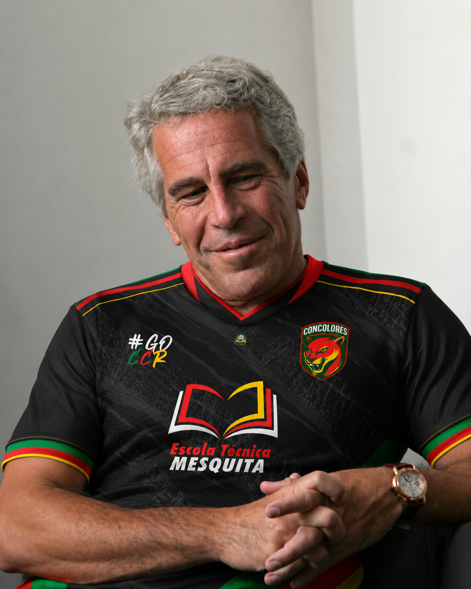
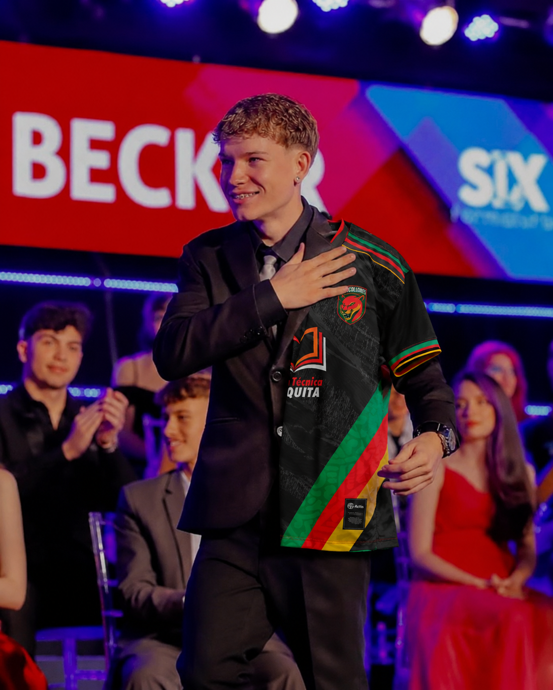

O Concolores News nasceu com o objetivo de trazer todas as informações mais quentes do Grupo Concolores
Nossa equipe trabalha para entregar conteúdos de qualidade, unindo a comunidade Concolores "Quando era mais novo eu era um pai solteiro que fazia festas na minha ilha mas tudo mudou quando eu vi Artur no berço sabia que tinha que deixar herança e orgulho para ele quando crescesse então não pensei 2 vezes sabia que criaria o melhor projeto da historia do rs comprando micro empresas para felicidade do povo" - Palavras do presidente e fundandor da concolores Epistein.

"Depois que meu pai Jefrey disse que precisava de um herdeiro eu sabia que tinha ser eu, minhas semelhanças eram demais para passarem dispercebidas, entre elas: ter 20 anos e 1,60, coluna torta, dirigir carros, pintar o cabelo de preto aos 19 anos pra não perceberem que eu sou tão branco etc. POVO CONCOLOR confiem em mim depois que Jefrey se aposentar eu serei o melhor herdeiro da historia do projeto levarei a camisa pra onde for."
Voltar para as Notícias